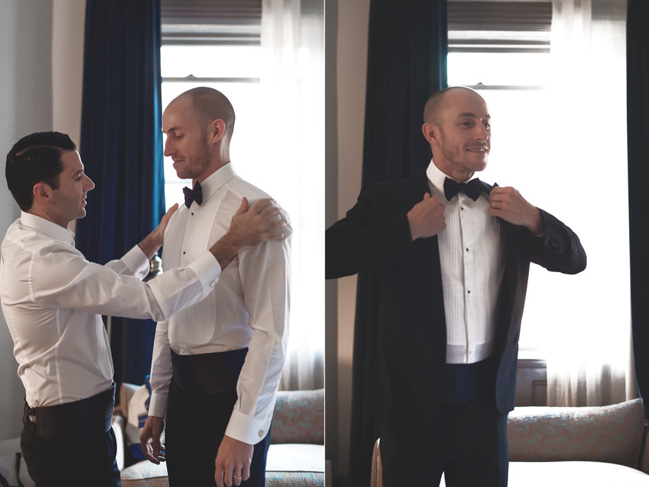
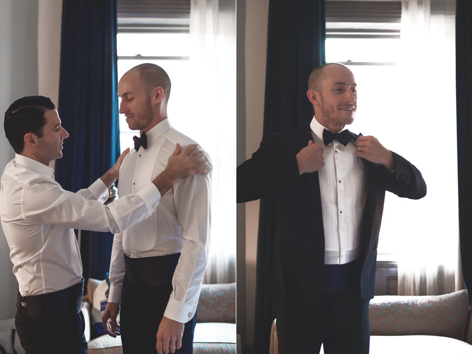

joe + jevin at fort tryon park
This wedding made me want to have another wedding, all over again (what do you say, hubby?), hosted in the fall, just like this one. The foliage, the chill in the air, the colors---it was all supremely lush and so different from most weddings' summery green warmth (though that's beautiful too...). Joe and Jevin chose to have what they called an "old New York" feel for their wedding, beginning at The High Line Hotel and hosted at the New Leaf Cafe in Fort Tryon Park, with classic tuxedos--including cummerbunds--and standards like Frank Sinatra and Ella Fitzgerald playing throughout. The utter joy and love from their family and friends was infectious, and it served to make an already beautiful wedding even more so. Congratulations, Jevin and Joe!
[Images shot while assisting Levi Stolove. Thanks, Levi!]

 
